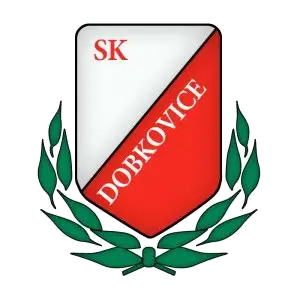
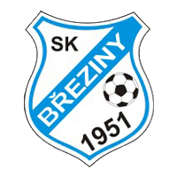
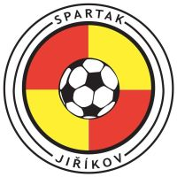
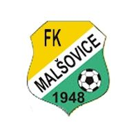
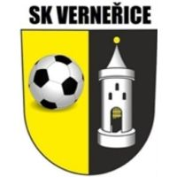

Okresní soutěž · Děčínsko
Po čtyřech kolech vedeme tabulku — bez porážky, skóre 16:5. Klub z labského údolí se dívá na tabulku shora.
Příští zápas · 5. kolo

SK Březiny vs SK DobkoviceSezóna 2026/27 · po 4. kole
Vloni druzí o šest bodů za Jiřetínem pod Jedlovou — letos zatím první. Kompletní výsledky na fotbalunas.cz.
Okresní soutěž · Děčín · 2026/27
| # | Tým | Z | V | R | P | Skóre | B |
|---|---|---|---|---|---|---|---|
| 1 | SK Dobkovice | 4 | 3 | 1 | 0 | 16:5 | 10 |
| 2 | LDTJ Lokomotiva Děčín | 4 | 3 | 1 | 0 | 10:2 | 10 |
| 3 | BYBynovec | 4 | 3 | 0 | 1 | 12:7 | 9 |
| 4 | SKStaré Křečany | 4 | 2 | 2 | 0 | 8:4 | 8 |
| 5 |  TJ Spartak Jiříkov B |
4 | 2 | 1 | 1 | 11:9 | 7 |
| 6 | DPFK Dolní Podluží | 4 | 2 | 1 | 1 | 11:10 | 7 |
| 7 | SK Březiny | 4 | 2 | 0 | 2 | 14:7 | 6 |
| 8 |  FK Malšovice B |
4 | 1 | 1 | 2 | 5:8 | 4 |
| 9 | HUHuntířov | 4 | 0 | 2 | 2 | 5:12 | 2 |
| 10 |  Verneřice |
4 | 0 | 1 | 3 | 10:15 | 1 |
| 11 | Františkov | 4 | 0 | 1 | 3 | 4:11 | 1 |
| 12 | SŠStarý Šachov | 4 | 0 | 1 | 3 | 3:19 | 1 |
Zdroj: fotbalunas.cz · stav k 18. 9. 2026
Kam míříme
Vloni druhé místo, letos od prvních kol čelo tabulky. Kádr drží pohromadě, góly střílí celý tým a na domácí zápasy chodí celá vesnice. Další krok je jasný: okresní přebor.
Hledáme hráče do pole i mezi tyče. Přijď na trénink — zbytek se domluví.
Kontakt
Fotbalové hřiště Dobkovice
407 03 Dobkovice, okres Děčín
Otevřít na mapě
Facebook — SK Dobkovice
Sestavy, fotky ze zápasů a pozvánky.
SK Dobkovice, z. s.
Profil na fotbal.cz